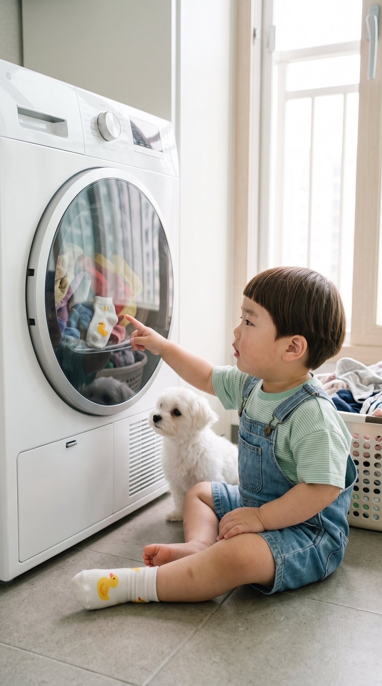
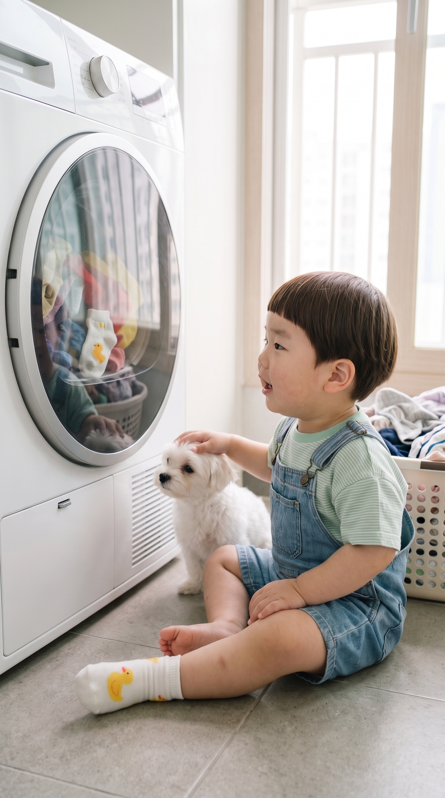
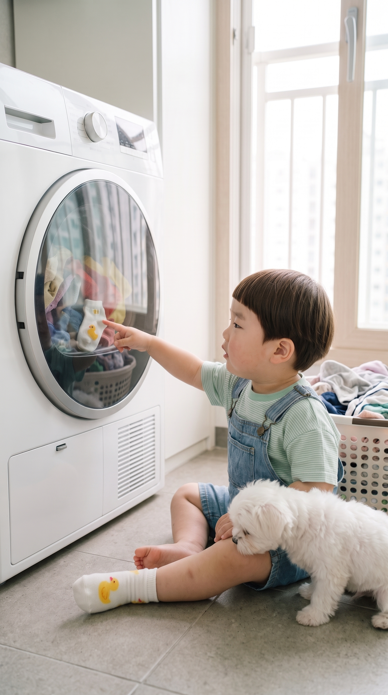

도윤이와 콩이: 건조기는 빙글빙글 티비
착각 — 도윤이는 건조기 둥근 창을 «빙글빙글 도는 티비»로 안다. 창 안에 자기 양말이 «나온» 걸 보고 뿌듯해한다.
- 컷마다 사진을 길게 눌러 사진 앱에 저장
- Flow 앱 → 그 사진을 시작 프레임으로 넣기
- 아래 프롬프트 복사 → 붙여넣기, 길이는 컷에 적힌 초
1
상황 · 6초
콩이 옆에 털썩 앉아 건조기 둥근 창을 손가락으로 가리키며

📲 사진을 길게 눌러 «사진 앱에 저장» · 또는 원본 열기
{kind=link}
🗣 «우와, 티비다! 콩이야 티비 봐!»
Flow 프롬프트 · 길이 6초
[Character Action & Continuity] Realistic Korean slice-of-life short video clip. a bright Korean apartment utility balcony with a white front-loading dryer at floor level, a laundry basket, and soft daylight through the window in Korea. Maintain exact appearance from start frame: a 24-month-old Korean toddler boy wearing a light green striped t-shirt and denim overall shorts, one white sock with a yellow duck on his left foot and his right foot bare. Scale: a small 24-month-old toddler build with natural proportions. Prop design (same in every cut): a round glass door of a white front-loading dryer showing colorful clothes tumbling inside, with one tiny white toddler sock with a yellow duck print. Stage (same in every cut): a bright Korean apartment utility balcony with a white front-loading dryer at floor level, a laundry basket, and soft daylight through the window. Props: the round glass dryer door with colorful clothes tumbling slowly inside. Doyoon sits on the floor in front of the dryer next to the white Maltese puppy Kongi and points at the round glass door with one finger [0-3s] Doyoon sits down on the floor beside Kongi in front of the dryer [3-6s] Doyoon points at the round glass door and turns his head to Kongi [Dialogue Script & Emotion] 도윤 (단독 발화): (콩이 옆에 털썩 앉아 건조기 둥근 창을 손가락으로 가리키며) "우와, 티비다! 콩이야 티비 봐!" [Audio & Voice Specifications] Single Voice Track Only: Definite 18 to 24-month-old Korean INFANT TODDLER boy voice. Low-pitched, cute, raspy little boy toddler voice. Strictly NOT a school-age child, NOT female. Sound Format: Solo toddler voice in a quiet room. Background Sound: Quiet indoor room tone. Continuous steady indoor room air. [Technical Directives] 카메라: 바닥 높이에서 건조기와 도윤이·콩이를 함께 담은 측면 미디엄 샷. 카메라 고정. 화면: 도윤이와 방만 보인다. 벽과 가구 표면은 무늬 없이 비어 있다. 도윤이 입모양 100% 완벽 립싱크.
2
전개 · 8초
창에 얼굴을 바짝 대고 빙글빙글 도는 옷을 구경하며 한 손으로 콩이 머리를 쓰다듬으며

📲 사진을 길게 눌러 «사진 앱에 저장» · 또는 원본 열기
{kind=link}
🗣 «옷이 빙글빙글 춤춘다! 콩이도 좋아?»
Flow 프롬프트 · 길이 8초
Prompt: 9:16 vertical video continuing from previous scene in Korea. Maintain exact appearance from start frame: cute 24-month-old Korean toddler boy Doyoon in a light green striped t-shirt and denim overall shorts sitting on the floor beside his small fluffy white Maltese puppy friend Kongi in front of a white front-loading dryer on a bright apartment balcony in Korea. Static camera, eye-level medium shot. Colorful clothes tumble slowly behind the round glass door of the dryer. Doyoon watches the tumbling clothes with wide, delighted eyes and gently pats Kongi's fluffy head with one chubby hand. Dialogue: "옷이 빙글빙글 춤춘다! 콩이도 좋아?" Audio: Solo 24-month-old Korean toddler boy voice speaking clear Korean, soft steady hum of the dryer, quiet indoor room tone.
3
반전 · 8초
자기 발의 오리 양말을 보고, 창 안의 똑같은 양말을 가리키며 콩이에게 뿌듯한 표정으로

📲 사진을 길게 눌러 «사진 앱에 저장» · 또는 원본 열기
{kind=link}
🗣 «어, 도윤이 양말이다! 콩이야, 양말 티비 나왔어!»
Flow 프롬프트 · 길이 8초
Prompt: 9:16 vertical video continuing from previous scene in Korea. Maintain exact appearance from start frame: cute 24-month-old Korean toddler boy Doyoon in a light green striped t-shirt and denim overall shorts sitting on the floor beside his small fluffy white Maltese puppy friend Kongi in front of a white front-loading dryer on a bright apartment balcony in Korea. Static camera, eye-level medium shot. A tiny white sock with a yellow duck print tumbles past the round glass door of the dryer. Doyoon looks at the little duck sock on his own foot, then points one chubby finger at the matching duck sock behind the glass and turns to Kongi with a proud, delighted toddler grin. Dialogue: "어, 도윤이 양말이다! 콩이야, 양말 티비 나왔어!" Audio: Solo 24-month-old Korean toddler boy voice speaking clear Korean, soft steady hum of the dryer, quiet indoor room tone.